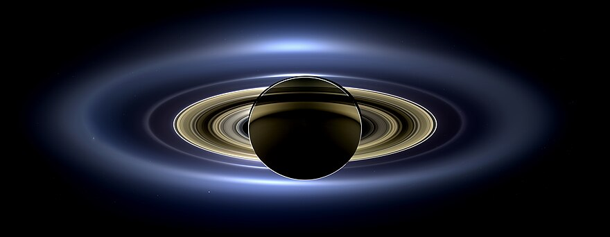
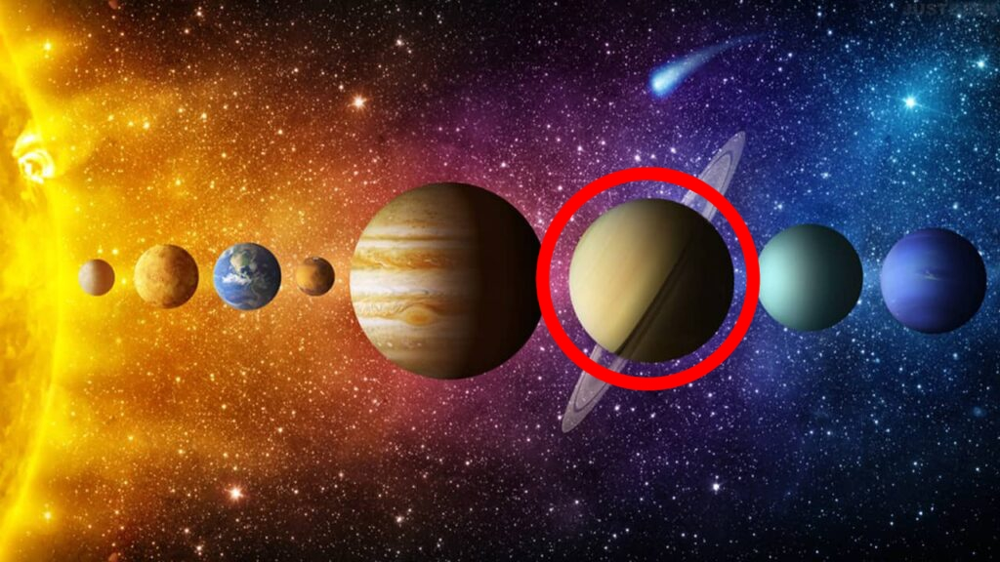

Saturne
Deuxième planète par sa taille, sixième par son éloignement du Soleil, Saturne est la planète la plus lointaine observable sans télescope. Elle est visible environ dix mois de l'année. Il faut en revanche un télescope pour voir son stupéfiant système d'anneaux.
| Saturne |
 |
Fiche d'identité
- Distance moyenne au Soleil : 1400 millions de km
- Température de surface : -180 °C
- Diamètre : 120 540 km
- Durée du jour : 10.6 heures
- Durée de l'année : 29.4 années terrestres
- Nombre de lunes : 62
- Gravité de surface : (Terre = 1) 1.07
|
Anneaux en série
Les anneaux de Saturne sont si spectaculaires qu'on en oublie souvent que Jupiter, Uranus et Neptune en possèdent également. Saturne compte trois anneaux principaux, si grands et brillants qu'on peut les observer avec un petit télescope. Ils sont dénommés C, B et A, du plus proche de la planète au plus distant.
Au-delà se trouvent les anneaux F, G et E, très faibles.
Turbulante Saturne
Vue au télescope, Saturne est jaune pâle, rayée de bandes ténues de nuages. Mais de temps à autre, de grandes taches blanches sont visibles. Ce sont des tempêtes géantes. Des vents violents les poussent autour de l'équateur, où ils soufflent jusqu'à 1800 km/h, soit six fois plus vite que les vents les plus puissants sur Terre. D'énormes tempêtes font aussi rage aux pôles : elles se caractérisent par un <<œil», comme les cyclones. Vénus et Jupiter connaissent de semblables tempêtes polaires.
Saturne dans le Soleil
Cette incroyable vue de Saturne en alignement avec le Soleil est composée de 165 images- prises par l'orbiteur Cassini. Éclairée par derrière, la planète se trouve dans l'ombre, mais la lumière du Soleil révèle des anneaux jusqu'alors jamais observés.


Lien vers la page dédié au Système Solaire
Lien vers la page d'acceuil